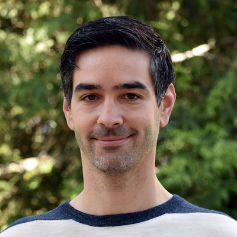

Nick Antipa
nick.antipa@eecs.berkeley.edu |
Curriculum Vitae |
Google Scholar
I am thrilled to announce that, starting in January 2021, I will be joining the faculty at the UC San Diego Jacobs School of Engineering in the department of Electrical and Computer Engineering!
About me: I am finishing up my PhD at UC Berkeley where I study Computational Imaging with Laura Waller and Ren Ng. Prior to my PhD work, I spent 5 years working on optical metrology for the National Ignition Facility at Lawrence Livermore National Lab. When I'm not working, I like hiking and playing the trumpet.

Research interests
|
|
I am broadly interested in design of computational imaging systems that capture more than just 2D. By jointly designing optics, sensors, and algorithms, I aim to discover novel imaging systems that enable modalities not possible with conventional lenses and sensors alone.
Most of my work has focused on single-shot capture of high dimensional optical signals. Inspired by compressed sensing, I have spent my PhD time researching pseudorandom phase optics (i.e. diffusers) as a computational imaging element capable of snapshot capture of high dimensional optical signals. When added to the focal plane of a conventional camera, a diffuser encodes 4D light field information, allowing recovery via optimization methods. Additionally, as shown in our work on the DiffuserCam (coauthored with Grace Kuo), the diffuser can simultaneously act as the imaging element and the high-dimensional encoder. This lensless architecture is capable of encoding 3D signals, such as volumetric and video data, into a single snapshot measurement. Using sparse recovery methods inspired by compressed sensing, sparse high dimensional signals can be recovered with far more samples than sensor pixels.
Please see the DiffuserCam project page for more information, including a tutorial to build your own using a Raspberry Pi, put together by Shreyas Parthasarathy and Camille Biscarrat.
Recent projects
3D Miniscope, aka Randoscope
This uses a new custom design based on the architecture shown at OSA Biophotonics 2019.
New results from our snapshot 3D fluorescent miniscope, Randoscope! This system combines the DiffuserCam with the Miniscope, replacing the tube lens with an engineered diffuser prototyped using multiphoton polymerization. The result is an inexpensive compressive imaging system that can capture fluorescent volumes with 3 micron lateral resolution and 10 micron axial at video rates with no moving parts. This compact system is well suited to a range of applications where inexpensive, compact volumetric fluorescence imaging is needed. This could range from parallel imaging in incubators where space is an issue, to head-mounting for volumetric in-vivo neuroscience.
The videos below show the snapshot 3D reconstruction capability of this system. The first is a time series of a fluorescence-stained tardigrade (waterbear) acquired at 30 volumes/second. Below that is a snapshot reconstruction of neurons expressing GFP in cleared mouse brain tissue. Our system achieves a far greater axial imaging range than conventional light field approaches.
Single frame raw data, cleared mouse brain neurons expressing GFP

Volumetric reconstruction showing individual neuron cell bodies and dendrites, 900x700x300 micron (WxHxD).
Video from Stills: Lensless Imaging with Rolling Shutter
[arXiv]
[Code and sample data]
Nick Antipa*, Patrick Oare*,
Emrah Bostan,
Ren Ng,
Laura Waller
IEEE International Conference on Computational Photography (ICCP), 2019.
Best paper at ICCP 2019
This project demonstrates the innate compressive video properties of DiffuserCam. Because image sensor chips have a finite bandwidth with which to read out pixels, recording video typically requires a trade-off between frame rate and pixel count. Compressed sensing techniques can circumvent this trade-off by assuming that the image is compressible. Here, we propose using multiplexing optics to spatially compress the scene, enabling information about the whole scene to be sampled from a row of sensor pixels, which can be read off quickly via a rolling shutter CMOS sensor. Conveniently, such multiplexing can be achieved with a simple lensless, diffuser-based imaging system. Using sparse recovery methods, we are able to recover 140 video frames at over 4,500 frames per second, all from a single captured image with a rolling shutter sensor. Our proof-of-concept system uses easily-fabricated diffusers paired with an off-the-shelf sensor. The resulting prototype enables compressive encoding of high frame rate video into a single rolling shutter exposure, and exceeds the sampling-limited performance of an equivalent global shutter system for sufficiently sparse objects.
DiffuserCam: lensless single-exposure 3D imaging
[arXiv]
Nick Antipa*, Grace Kuo*, Reinhard Heckel, Ben Mildenhall,
Emrah Bostan,
Ren Ng,
Laura Waller
Optica, 2018.
No. 2 in Optica 15 top-cited articles, Jan 2020
Best demo, ICCP 2017
We demonstrate a compact, easy-to-build computational camera for single-shot three-dimensional (3D) imaging. Our lensless system consists solely of a diffuser placed in front of an image sensor. Every point within the volumetric field-of-view projects a unique pseudorandom pattern of caustics on the sensor. By using a physical approximation and simple calibration scheme, we solve the large-scale inverse problem in a computationally efficient way. The caustic patterns enable compressed sensing, which exploits sparsity in the sample to solve for more 3D voxels than pixels on the 2D sensor. Our 3D reconstruction grid is chosen to match the experimentally measured two-point optical resolution, resulting in 100 million voxels being reconstructed from a single 1.3 megapixel image. However, the effective resolution varies significantly with scene content. Because this effect is common to a wide range of computational cameras, we provide a new theory for analyzing resolution in such systems.
Single-shot diffuser-encoded light field imaging
Nick Antipa*, Sylvia Necula,
Ren Ng,
Laura Waller
IEEE International Conference on Computational Photography (ICCP), 2016.
Best paper at ICCP 2016
We capture 4D light field data in a single 2D sensor image by encoding spatio-angular information into a speckle field (caustic pattern) through a phase diffuser. Using wave-optics theory and a coherent phase retrieval method, we calibrate the system by measuring the diffuser surface height from through-focus images. Wave-optics theory further informs the design of system geometry such that a purely additive ray-optics model is valid. Light field reconstruction is done using sparsity-constrained iterative inverse methods. We demonstrate a prototype system and present empirical results of 4D light field reconstruction and computational refocusing from a single diffuser-encoded 2D image.
Refocusable 4D light field

spatio-angular image

Copyright 2020 Nick Antipa. All rights reserved.
|
|